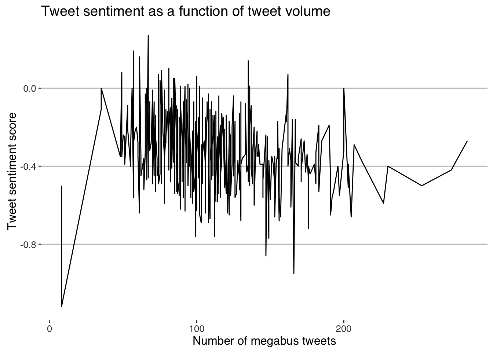
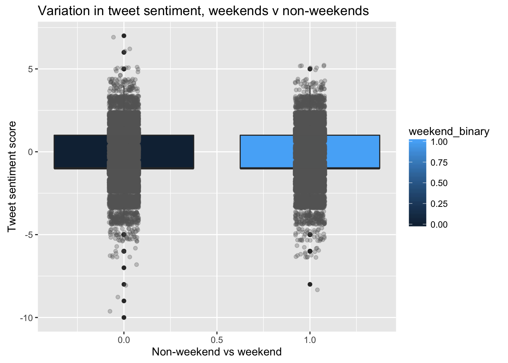
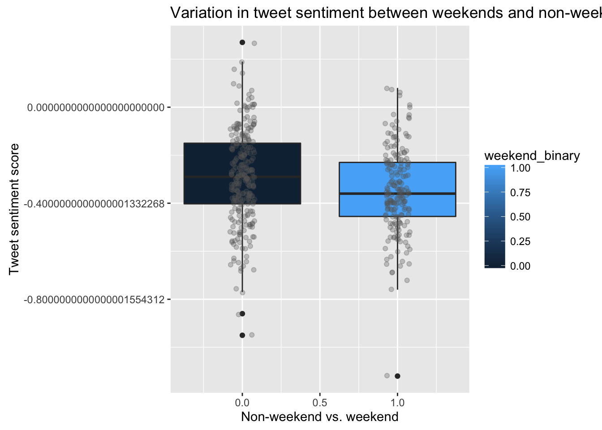
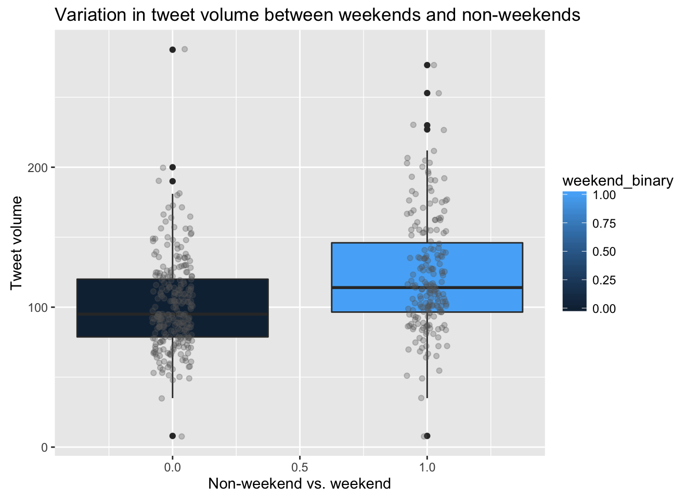
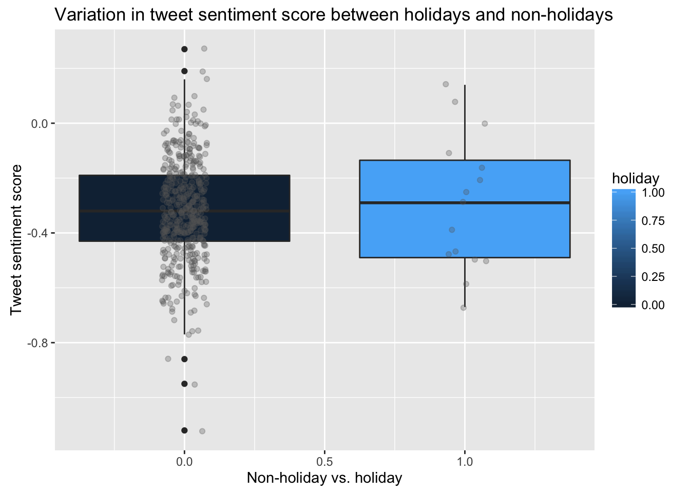

riding the mega
We first tested the relationship between tweet volume and tweet sentiment. We expected there to be a correlation, and there was. A linear regression was appropriate for this because while we are uncertain about causality (and indeed, causality may not even be consistent), we had reason to believe that there was a relationship between tweet volume and sentiment, both based on our data exploration.
We rejected the null with a p-value of less than 0.001, concluding that tweet sentiment on low volume days is greater than tweet sentiment on high volume days. The volume of tweets on a given day is a statistically significant predictor of the average daily sentiment score, and for every additional tweet, we would expect a 0.0014 decrease in average daily sentiment score. While there is much variation day to day, the following chart clearly aligns with our finding that on days with higher tweet volume, sentiment score is lower.
We then explored the relationship between weekend (Friday, Saturday, or Sunday) and tweet sentiment. First, we looked at the average tweet score for all tweets occurring on weekends vs. non-weekends. Then, we looked at the average of the daily tweet scores, each of which is the average sentiment for all tweets on that day. The first approach treats all tweets equally, while the second approach avoids overrepresenting days with many tweets, such as days when a significant event occurs.
We examined weekends with weekend day weighted by tweet volume: When looking at all weekend vs weekday tweet scores as comparing two large group, with each day weighted by tweet volume, using a Welch two-sample t-test, the mean tweet score on weekends is not significantly different (p = 0.13) than the mean tweet score on non-weekends.
With weekend days weighted by tweet volume, using a Welch two-sample t-test, we concluded that the mean of daily tweet scores on weekends is significantly less than the mean tweet score on non-weekends, *without* stratifying on tweet volume.
We also examined weekends with each weekend day not weighted by tweet volume.
Again using a Welch two-sample t-test, we concluded that the mean of daily tweet scores on weekends is significantly less (p = 0.0017) than the mean tweet score on non-weekends, *without* stratifying on tweet volume.
We then pursued the association between average sentiment score for tweet-days and weekend status. We performed a multiple linear regression examining the relationship of weekend status and tweet sentiment with tweet volume as a covariate. Tweet volume emerged as a strong predictor of tweet sentiment, while weekend was not a significant predictor.
One of our earliest hypotheses was that tweeting would increase on weekends. We conducted a t-test to test this hypothesis.
We rejected the null (p value 3.12e-9) and concluded that tweet volume on weekends is statistically different than tweet volume on weekdays.
We also conducted a t-test to test the hypothesis that tweet sentiment would be significantly different on holidays (federal holidays, Valentine’s Day, and Halloween). This test was inspired by an early observation that there appeared to be many more tweets on Valentine’s Day than on an average mid-February day. (More on that in our visualizations section.)
We concluded that there is no statistically significant association between holiday and tweet sentiment when we do not stratify on tweet volume (p=0.63) as well as when we do stratify on tweet volume (0.85).
